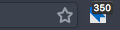

ℹ️ Since version 66, Firefox provides a dedicated user interface to manage keyboard shortcuts for all your addons. For more details, please have a look at Mozilla Support: Manage extension shortcuts in Firefox
ℹ️ Chrome-based browsers provide a dedicated user interface to manage keyboard shortcuts for all your addons. Please have a look at addons shortcuts.